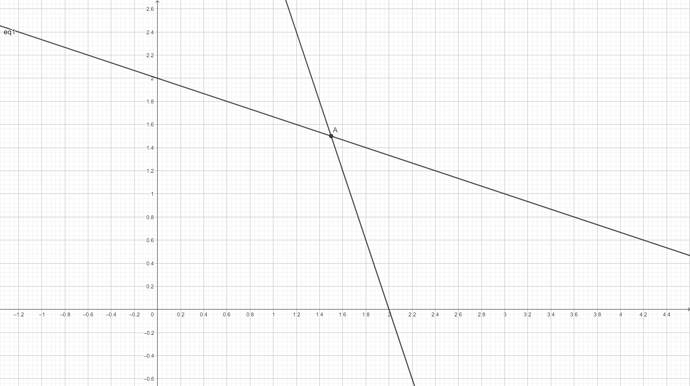

Chapter 2 Revisão Algebra
2.1 Sistemas lineares
Definição: O vetor \(x_0\) é dito uma solução do sistema de equações lineares
\(A_{mxn}x_{nx1} = b_{mx1}\)
Se, com a substituição de \(x_0\) em \(x\) temos o conjunto de identidades verdadeiras
EXEMPLO: O sistema:
\[\begin{cases} x_1 + 3x_2 = 6 \\ 3x_1 + x_2 = 6 \end{cases}\]Que pode ser escrito como:
\[\begin{equation*} \underbrace{ \left[ \begin{array}{cc} 1 & 3 \\ 3 & 1 \end{array} \right] }_{A} \underbrace{ \left[ \begin{array}{cc} x_1 \\ x_2 \end{array} \right] }_{x} = \underbrace{ \left[ \begin{array}{cc} 6 \\ 6 \end{array} \right] }_{b} \end{equation*}\]Tem solução \(x_0^T = [3/2,3/2]\), pois ao substituirmos \(x_0\) no sistema:
\[\begin{cases} 3/2 + 3(3/2) = 6 \rightarrow 6=6\\ 3(3/2) + 3/2 = 6 \rightarrow 6=6 \end{cases}\]Podemos classificar os sistemas e suas relações em 3 casos, em função do número de equações (\(m\)) e variáveis (\(n\)).
Caso 1: \(m > n\):
Nesse caso o sistema só vai possuir solução se existirem no máximo \(n\) equações linearmente independentes:
EXEMPLO:
\[\begin{cases} x_1 = 2 \\ 2x_1 = 4 \end{cases}\]Sistema 2x1, porém 1 equação LI, portanto possui solução.
EXEMPLO:
\[\begin{cases} x_1 = 2 \\ x_1 = 4 \end{cases}\]Sistema 2x1, porém 2 equação LI, portanto não possui solução.
Caso 2: \(m = n\):
Se as equações forem LI, então o sistema possui uma solução.
EXEMPLO:
\[\begin{cases} x_1 + 2x_2 + 3x_3 = 9 \\ 2x_1 - x_2 + x_3 = 8 \\ 3x_1 \quad \quad - x_3 = 3 \end{cases}\]que pode ser escrito como:
\[\begin{equation*} \underbrace{ \left[ \begin{array}{ccc} 1 & 2 & 3 \\ 2 & -1 & 1 \\ 3 & 0 & -1 \end{array} \right] }_{A} \underbrace{ \left[ \begin{array}{c} x_1 \\ x_2 \\ x_3 \end{array} \right] }_{x} = \underbrace{ \left[ \begin{array}{c} 9 \\ 8 \\ 3 \end{array} \right] }_{b} \end{equation*}\]Tem solução \(x_0^T=[2,-1,3]\)
Caso 3: \(m < n\): Se as equações forem LI, então o sistema possui infinitas soluções, com n-m variáveis livres (podem assumir qualquer valor).
EXEMPLO:
\[\begin{cases} 2x_1 + 3x_2 + x_3 \quad \quad = 120 \\ x_1 \quad \quad \quad \quad \quad + x_4 \quad = 40 \\ \quad \quad \quad x_2 \quad \quad \quad \quad + x_5 = 30 \end{cases}\]Temos n-m = 5-3 = 2 variáveis livres, podemos assumir (arbitrariamente) \(x_1 = 0\), \(x_2 = 0\). Uma solução para o sistema é então \(x_0^T = [0,0,120,40,30]\).
2.2 Resolução de sistemas lineares
2.2.1 Sistemas canônicos
Se um sistema de equações lineares estiver na forma canônica, podemos encontrar facilmente uma (pelo menos) solução para o mesmo.
Definição: O sistema \(Ax = b\) está na forma canônica em relação a \(x_B\) se o mesmo puder ser reescrito como:
\(Ix_B + \bar Ax_N = b\)
Em que \(I\) é a matriz identidade \(mxm\).
Ou seja, devem existir \(m\) variáveis que possuem valor 1 em uma equação e zero em todas as outras, todas em equações diferentes.
EXEMPLOS: Para cada um dos sistemas abaixo verifique se ele está na forma canônica, e em relação a quais variáveis. Se sim, determine pelo menos uma solução para o mesmo
A:
\[\begin{cases} x_1 \quad = 10 \\ \quad + x_2 = 5 \end{cases}\]É canônico em relação a \([x_1,x_2]\), pois:
\[\begin{equation*} \underbrace{ \left[ \begin{array}{ccc} 1 & 0 \\ 0 & 1 \end{array} \right] }_{I} \underbrace{ \left[ \begin{array}{c} x_1 \\ x_2 \end{array} \right] }_{x_B} + \underbrace{ 0 }_{\bar A} = \underbrace{ \left[ \begin{array}{c} 10 \\ 30 \\ 20 \end{array} \right] }_{b} \end{equation*}\]Note que o componente principal para definir um sistema canônico é a matriz identidade (\(I\)): com ela definida, todos os outros termos podem ser encontrados, sem uma identidade o sistema não será canônico.
B:
\[\begin{cases} x_1 + 3x_2 \quad \quad + 2 x_4 \quad \quad = 10 \\ \quad \quad \quad \quad + x_3 + 4x_4 \quad \quad = 30 \\ \quad \quad 2x_2 \quad \quad \quad \quad \quad + x_5 = 20 \end{cases}\]É canônico em relação a \(x_B^T = [x_1,x_3,x_5]\), pois:
\[\begin{equation*} \underbrace{ \left[ \begin{array}{ccc} 1 & 0 & 0 \\ 0 & 1 & 0 \\ 0 & 0 & 1 \end{array} \right] }_{I} \underbrace{ \left[ \begin{array}{c} x_1 \\ x_3 \\ x_5 \end{array} \right] }_{x_B} + \underbrace{ \left[ \begin{array}{ccc} 3 & 2 \\ 0 & 4 \\ 2 & 0 \end{array} \right] }_{\bar A} \underbrace{ \left[ \begin{array}{c} x_2 \\ x_4 \end{array} \right] }_{x_N} = \underbrace{ \left[ \begin{array}{c} 10 \\ 30 \\ 20 \end{array} \right] }_{b} \end{equation*}\]Com uma possível solução: \(x_B^T = [x_1,x_3,x_5] = [10,30,20]\) e \(x_N^T = [x_2,x_4] = [0,0]\).
C:
\[\begin{cases} 4x_1 + 2x_2 \quad \quad = 20 \\ x_1 \quad \quad \quad + x_3 = 9 \\ \quad \quad \quad x_2 \quad \quad = 11 \end{cases}\]Não está na forma canônica (não é possível encontrar uma submatriz identidade \(I\)).
2.3 Pivoteamento
Vimos que se o sistema está na forma canônica em relação a \(x_B\), conseguimos extrair uma solução só de olhar as equações. Uma forma, então, de resolver sistemas lineares, é transformá-los na forma canônica. Aplicamos diversas operações no sistema (pivoteamento) para gerar um sistema equivalente na forma canônica. O pivoteamento é feito usando as duas operações elementares nas linhas do sistema:
- Substituir uma equação \(L_t\) por \(kL_t\), mantendo as outras iguais (\(k \neq 0\))
- Substituir \(L_t\) por \(L_t + kL_i\), onde \(E_i\) é qualquer outra equação do sistema.
EXEMPLOS: Encontre uma solução para cada um dos sistemas abaixo, colocando-os na forma canônica em relação as variáveis indicadas:
A: Em relação a \(x_1\) e \(x_2\).
\[\begin{cases} \quad \quad 2x_2 + 2x_3 + 2x_4 = 10 \\ x_1 - 2x_2 - x_3 + x_4 = 2 \end{cases}\]SOLUÇÃO
\(L_1 \leftarrow \frac{1}{2}L_1\)
\[\begin{cases} \quad \quad x_2 + x_3 + x_4 = 5 \\ x_1 - 2x_2 - x_3 + x_4 = 2 \end{cases}\]\(L_2 \leftarrow L_2 + 2L_1\)
\[\begin{cases} \quad \quad x_2 + x_3 + x_4 = 5 \\ x_1 \quad \quad \quad x_3 + 3x_4 = 12 \end{cases}\]Com essas operações jpa conseguimos reescrever o sistema de forma canônica:
\[\begin{equation*} \underbrace{ \left[ \begin{array}{ccc} 1 & 0 \\ 0 & 1 \\ \end{array} \right] }_{I} \underbrace{ \left[ \begin{array}{c} x_1 \\ x_2 \end{array} \right] }_{x_B} + \underbrace{ \left[ \begin{array}{ccc} 1 & 3 \\ 1 & 1 \\ \end{array} \right] }_{\bar A} \underbrace{ \left[ \begin{array}{c} x_3 \\ x_4 \end{array} \right] }_{x_N} = \underbrace{ \left[ \begin{array}{c} 12 \\ 5 \end{array} \right] }_{b} \end{equation*}\]Com uma possível solução: \(x_B^T = [x_1,x_2] = [5,12]\) e \(x_N^T = [x_3,x_4] = [0,0]\).
B: Em relação a \(x_1\) e \(x_2\).
\[\begin{cases} x_1 + 3x_2 = 6 \\ 3x_1 + x_2 = 6 \end{cases}\]SOLUÇÃO
\(L_2 \leftarrow L_2 - 3L_1\)
\[\begin{cases} x_1 + 3x_2 = 6 \\ \quad \quad x_2 = 3/2 \end{cases}\]\(L_1 \leftarrow L_1 - 3 L_2\)
\[\begin{cases} x_1 \quad \quad = 3/2 \\ \quad \quad x_2 = 3/2 \end{cases}\]Temos que:
\[\begin{equation*} \underbrace{ \left[ \begin{array}{ccc} 1 & 0 \\ 0 & 1 \\ \end{array} \right] }_{I} \underbrace{ \left[ \begin{array}{c} x_1 \\ x_2 \end{array} \right] }_{x_B} = \underbrace{ \left[ \begin{array}{c} 3/2 \\ 3/2 \end{array} \right] }_{b} \end{equation*}\]Com solução \(x_B^T = [x_1,x_2] = [3/2,3/2]\)
OBS: Em duas variáveis, a solução do sistema é a intersecção das duas retas:

C: Em relação a \(x_1\),\(x_2\) e \(x_3\).
\[\begin{cases} x_1 + x_2 + x_3 + x_4 = 6 \\ 3x_1 + 6x_2 + x_3 + x_4 = 2 \\ x_1 + 4x_2 + 3x_3 + x_4 = 10 \end{cases}\]SOLUÇÃO
Realizando as operações na forma matricial:
\[\begin{equation*} \left[ \begin{array}{ccc} 1 & 1 & 1 & 1 & 6 \\ 0 & 3 & -2 & -2 & -16 \\ 0 & 3 & 2 & 0 & 4 \\ \end{array} \right] \end{equation*}\]\(L_2 \leftarrow L_2/3\)
\[\begin{equation*} \left[ \begin{array}{ccc} 1 & 1 & 1 & 1 & 6 \\ 0 & 1 & -2/3 & -2/3 & -16/3 \\ 0 & 3 & 2 & 0 & 4 \\ \end{array} \right] \end{equation*}\]\(L_1 \leftarrow L_1 - L_2\)
\(L_3 \leftarrow L_3 - 3L_2\)
\[\begin{equation*} \left[ \begin{array}{ccc} 1 & 0 & 5/3 & 5/3 & 34/3 \\ 0 & 1 & -2/3 & -2/3 & -16/3 \\ 0 & 0 & 4 & 2 & 20 \end{array} \right] \end{equation*}\]\(L_3 \leftarrow L_3/4\)
\[\begin{equation*} \left[ \begin{array}{ccc} 1 & 0 & 5/3 & 5/3 & 34/3 \\ 0 & 1 & -2/3 & -2/3 & -16/3 \\ 0 & 0 & 1 & 1/2 & 5 \end{array} \right] \end{equation*}\]\(L_2 \leftarrow L_2 + 2/3L_3\)
\(L_1 \leftarrow L_1 + 5/3L_3\)
\[\begin{equation*} \left[ \begin{array}{ccc} 1 & 0 & 0 & 5/6 & 3 \\ 0 & 1 & 0 & -1/3 & -2 \\ 0 & 0 & 1 & 1/2 & 5 \end{array} \right] \end{equation*}\]Podemos reescrever como:
\[\begin{equation*} \underbrace{ \left[ \begin{array}{ccc} 1 & 0 & 0 \\ 0 & 1 & 0 \\ 0 & 0 & 1 \end{array} \right] }_{I} \underbrace{ \left[ \begin{array}{c} x_1 \\ x_2 \\ x_3 \end{array} \right] }_{x_B} + \underbrace{ \left[ \begin{array}{ccc} 5/6 \\ -1/3 \\ 1/2 \end{array} \right] }_{\bar A} \underbrace{ \left[ \begin{array}{c} x_4 \end{array} \right] }_{x_N} + = \underbrace{ \left[ \begin{array}{c} -3 \\ -2 \\ 5 \end{array} \right] }_{b} \end{equation*}\]Temos uma solução com: \(x_B^T = [x_1,x_2,x_3] = [3,-5,5]\) e \(x_N^T = [0]\).
D: Mesmo sistema anterior, em relação à \(x_2\),\(x_3\) e \(x_4\).
SOLUÇÃO
\(L_2 \leftarrow L_2 - 6L_1\)
\(L_3 \leftarrow L_3 - 4L_1\)
\[\begin{equation*} \left[ \begin{array}{ccc} 1 & 1 & 1 & 1 & 6 \\ -3 & 0 & -5 & -5 & -34 \\ -3 & 0 & -1 & -3 & -14 \end{array} \right] \end{equation*}\]\(L_2 \leftarrow L_2/-5\)
\(L_1 \leftarrow L_1 - L_2\)
\(L_3 \leftarrow L_3 + L_2\)
\[\begin{equation*} \left[ \begin{array}{ccc} 2/5 & 1 & 0 & 0 & -4/5 \\ 3/5 & 0 & 1 & 1 & 34/5 \\ 12/5 & 0 & 0 & -2 & -36/5 \end{array} \right] \end{equation*}\]\(L_3 \leftarrow L_3/-2\)
\(L_2 \leftarrow L_2 - L_3\)
\[\begin{equation*} \left[ \begin{array}{ccc} 2/5 & 1 & 0 & 0 & -4/5 \\ 9/5 & 0 & 1 & 0 & 16/5 \\ -6/5 & 0 & 0 & 1 & 18/5 \end{array} \right] \end{equation*}\]Podemos reescrever como:
\[\begin{equation*} \underbrace{ \left[ \begin{array}{ccc} 1 & 0 & 0 \\ 0 & 1 & 0 \\ 0 & 0 & 1 \end{array} \right] }_{I} \underbrace{ \left[ \begin{array}{c} x_2 \\ x_3 \\ x_4 \end{array} \right] }_{x_B} + \underbrace{ \left[ \begin{array}{ccc} 2/5 \\ 9/5 \\ -6/5 \end{array} \right] }_{\bar A} \underbrace{ \left[ \begin{array}{c} x_1 \end{array} \right] }_{x_N} + = \underbrace{ \left[ \begin{array}{c} -4/5 \\ 16/5 \\ 18/5 \end{array} \right] }_{b} \end{equation*}\]